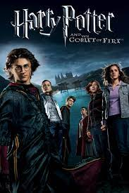

This is the fifth film of the young wizard, he has to participate in the Triwizard Tournament.
The story follows former assassin John Wick and his attempt to hunt down the men who broke into his home, stole his vintage car and killed his puppy, which was a last gift to him from his recently deceased wife.

During World War II, Steve Rogers, a frail man, is transformed into the super-soldier Captain America and must stop the Red Skull (Weaving) from using the Tesseract as an energy source for world domination.